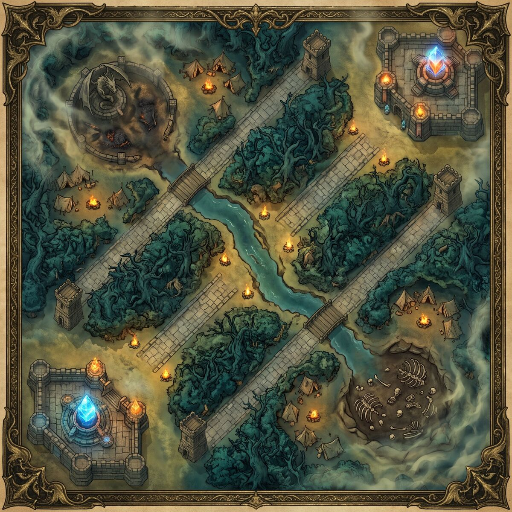

Silhueta primeiro
Uma grande forma dominante, uma secundária e poucos detalhes terciários.
Bíblia criativa
Uma única base para lore, direção de arte, territórios e criaturas. O que ainda é proposta aparece como proposta.
Distintos no conceito. Unidos no craft.
Uma grande forma dominante, uma secundária e poucos detalhes terciários.
Anatomia estilizada, peso claro e proporções capazes de virar miniatura.
Madeira, azulejo, plástico, tecido e sucata contam história antes do texto.
Design tridimensional legível, acabamento ilustrado e luz de key art.
A rota é acento tático; não domina a identidade do personagem.
Rosto, gesto e arma comunicam personalidade sem depender da lore.
O craft combina arquétipo reconhecível (70%), obsessão absurda (20%) e cicatriz de lore (10%). A referência de estilo não vira referência de personagem.
Direção de arte do tabuleiroO mapa abaixo é uma referência criativa anterior. A planta tática atual é gerada do motor e pode ser consultada no manual do jogo.

Prédios empilhados, caixas-d’água e fortalezas de condomínio.
Sucata biotecnológica que cresce, caça e recicla invasores.
O centro nervoso onde antenas disputam a última frequência da Várzea.
Espaço reservado para a identidade narrativa da rota, sem herdar o conceito descartado de Frete.
Um vazamento impossível divide o mapa e alimenta suas criaturas.
Os nomes e a lore abaixo pertencem ao guia criativo publicado. A função de jogo continua na base mecânica; a arte final ainda está pendente.
Uma ave de obra que acorda a arena no grito e quebra cobertura no peito.
CONCEITODevora cabos, cospe curto-circuitos e muda o comportamento da Vazante.
CONCEITOUma massa de lona, ferragem e propaganda esquecida que avança sem freio.
CONCEITOA direção do tabuleiro também registra Rato Maluco de Esgoto e Boi Mecânico. Unificar a nomenclatura exige decisão criativa; nenhum nome foi substituído no jogo nesta revisão.
Há 22 itens na base mecânica. O redesenho criativo ainda não tem lote aprovado e entra depois de fechar o primeiro trio. A silhueta deve explicar uso e função sem mudar os números do jogo.
Consultar o catálogo jogável